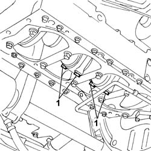
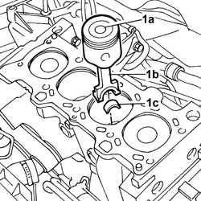
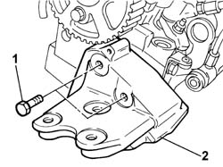
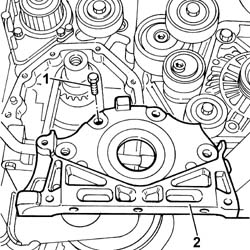
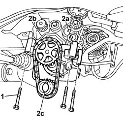
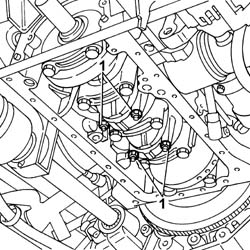
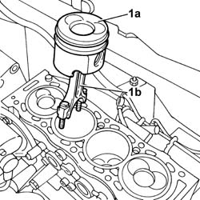
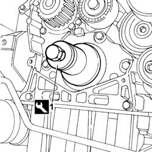

1028H10 PISTON WITH CONNECTING ROD - R R
- Path
- Procedures > 10 ENGINE UNIT > 1028 PISTONS AND CONNECTING RODS > 1028H PISTONS AND CONNECTING RODS > 1028H10 PISTON WITH CONNECTING ROD - R R
- Kind
- repair procedure (removal / refitting; the operation number is the code)
- Applies to
- engines: 2.0 JTD 8V, 2.3 JTD 16V; all production periods
- Interactive page
- https://sloeber94.github.io/elrnDB-fDct/en/#/244000686
Applies to: all engines; all production periods
 Removing
Removing
 Refitting
RefittingOp. 7055B54 UNDER-ENGINE GUARD - R R
Op. 4450B04 RIGHT FRONT WHEEL R R
Op. 1092B72 POWER STEERING PUMP DRIVE BELT - ALTERNATOR - R&R
See in Op. 1092A10
See in Op. 1032D12
Op. 1016B10 SINGLE CYLINDER HEAD EXTENSION - CHANGE GASKET
See in Op. 1016C10
- Fit the timing side flexible engine block by screwing in the retaining bolts without tightening.
- Remote the tool positioned beneath the sump for supporting the power unit.
 | Description | Code | Function |
|---|---|---|---|
. | Crossmember | 1.870.735.000 | Lower engine mounting beam |
Op. 1020A10 CRANKCASE SUMP - R&R AND REPLACE GASKET
See in Op. 1084B28
1. Undo the bolts and remove the connecting rod caps complete with 2nd and 3rd cylinder lower connecting rod half-bearings.

Applies to: all engines; all production periods
- Lower the vehicle.
1. Withdraw and remove 2nd and 3rd cylinder pistons (1a) with connecting rods (1b) and upper connecting rod half bearings.

Applies to: all engines; all production periods
- Turn the crankshaft and proceed in the same way to remove the 1st and 4th cylinder pistons and connecting rods.
Applies to: all engines; all production periods
Refitting
Removing- Fit the 1st and 4th pistons with connecting rods and connecting rod upper bearing halves using a suitable installing tool to compress the piston rings.
- Fit the connecting rod caps complete with 1st and 4th cylinder lower bearing halves and secure by tightening the bolts to the recommended torque. Carry out angular tightening separately and using an angle wrench for tightening.
| Description | Code | Function |
|---|---|---|---|
. | Torque wrench | 1.860.942.000 | Connecting rod cap bolt angular tightening |
 | Value - daNm | Fastening | Component | Ø |
|---|---|---|---|---|
. | 4+60° | Bolt | CONNECTING ROD CAPS | - |
- Proceed in the same way to fit the 2nd and 3rd cylinder pistons and connecting rods.
See in Op. 1084B28
Op. 1020A10 CRANKCASE SUMP - R&R AND REPLACE GASKET
- Remove the tool positioned beneath the sump for supporting the power unit.
| Description | Code | Function |
|---|---|---|---|
. | Crossmember | 1.870.735.000 | Lower engine mounting beam |
- Undo the retaining bolts and remove the timing side flexible engine block.
See in Op. 1016C10
Op. 1016B10 SINGLE CYLINDER HEAD EXTENSION - CHANGE GASKET
See in Op. 1032D12
See in Op. 1092A10
Op. 1092B72 POWER STEERING PUMP DRIVE BELT - ALTERNATOR - R&R
Op. 4450B04 RIGHT FRONT WHEEL R R
Op. 0010T20 COOLANT CHECK DENSITY AND TOP UP IF NECESSARY
Op. 0010T21 COOLANT CHECK DENSITY AND TOP UP IF NECESSARY
Applies to: engines: 2.0 JTD 8V; all production periods
Removing
RefittingOp. 7055B54 UNDER-ENGINE GUARD - R R
Op. 4130B10 POWER STEERING FLUID RESEVOIR R R
See in Op. 1048A21
See in Op. 1076B50
Op. 1092G10 SINGLE ENGINE BELT R R
Op. 1092G10 SINGLE ENGINE BELT R R
See in Op. 1016C10
1. Remove the timing side rigid engine mount from the cylinder head.

Applies to: engines: 2.0 JTD 8V; all production periods
- Fit the rigid support on the crankcase.
- Fit the timing side flexible engine block by screwing in the retaining bolts without tightening.
- Remote the tool positioned beneath the sump for supporting the power unit.
| Description | Code | Function |
|---|---|---|---|
. | Crossmember | 1.870.735.000 | Lower engine mounting beam |
Op. 1020A20 CRANK CASE OIL SUMP - R + R CLEAN SEALS FOR SEALANT APPLICATION
See in Op. 1032B44
1. Undo the bolts securing the front crankshaft oil seal cover.
2. Remove the front crankshaft oil seal cover from its seat.

Applies to: engines: 2.0 JTD 8V; all production periods
1. Undo the fixing bolts.
2. Remove the oil pump (2a) complete with drive chain (2b), pinion (2c) and tab.

Applies to: engines: 2.0 JTD 8V; all production periods
1. Undo the bolts and remove the connecting rod caps complete with 2nd and 3rd cylinder lower connecting rod half-bearings.

Applies to: engines: 2.0 JTD 8V; all production periods
- Lower the vehicle.
1. Withdraw and remove 2nd and 3rd cylinder pistons (1a) with connecting rods (1b) and upper connecting rod half bearings.

Applies to: engines: 2.0 JTD 8V; all production periods
- Turn the crankshaft and proceed in the same way to remove the 1st and 4th cylinder pistons and connecting rods.
Applies to: engines: 2.0 JTD 8V; all production periods
Refitting
Removing- Fit the 1st and 4th pistons with connecting rods and connecting rod upper bearing halves using a suitable installing tool to compress the piston rings.
| Description | Code | Function |
|---|---|---|---|
. | Band | 1.860.700.000 | Fitting pistons |
- Fit the connecting rod caps complete with 1st and 4th cylinder lower bearing halves and secure by tightening the bolts to the recommended torque. Carry out angular tightening separately and using an angle wrench for tightening.
| Description | Code | Function |
|---|---|---|---|
. | Torque wrench | 1.860.942.000 | Connecting rod cap bolt angular tightening |
| Value - daNm | Fastening | Component | Ø |
|---|---|---|---|---|
. | 2.1+74° | Bolt | CONNECTING ROD CAPS | - |
- Proceed in the same way to fit the 2nd and 3rd cylinder pistons and connecting rods.
- Fit the engine oil pump tightening the bolts to the recommended torque.
| Value - daNm | Fastening | Component | Ø |
|---|---|---|---|---|
. | 1 | Bolt | ENGINE OIL PUMP | - |
- Fit the chain, the pinion and the pinion fastening tabs.
- Remove the oil sealing ring from its seat on the front cover.
- Apply sealant to the front cover plane.
 | Description | Qty. | Component | Type | Classification |
|---|---|---|---|---|---|
. | DOW CORNING 7091 | - | FRONT COVER CRANKSHAFT | Silicone sealant | - |
- Fit the cover and tighten the fixing bolts to the recommended torque.
| Value - daNm | Fastening | Component | Ø |
|---|---|---|---|---|
. | 1,5 | Bolt | FRONT COVER CRANKSHAFT | - |
See in Op. 1032B44
Op. 1020A20 CRANK CASE OIL SUMP - R + R CLEAN SEALS FOR SEALANT APPLICATION
1. Fit the seal (1a) using the tool (1b).
| Description | Code | Function |
|---|---|---|---|
1b | Fitting tool | 1.860.855.000 | Fitting crankshaft front oil seal |

Applies to: engines: 2.0 JTD 8V; all production periods
- Fit the tool positioned underneath the sump for supporting the power unit.
| Description | Code | Function |
|---|---|---|---|
. | Crossmember | 1.870.735.000 | Lower engine mounting beam |
- Remove the timing side rigid engine mount.
- Remove the rigid support on the crankcase.
- Fit the timing side rigid engine support on the cylinder head tightening the fixing bolts.
See in Op. 1016C10
Op. 1092G10 SINGLE ENGINE BELT R R
See in Op. 1076B50
See in Op. 1048A21
Op. 4130B10 POWER STEERING FLUID RESEVOIR R R
Topics linked from this page (12)
- 0010T10 ENGINE OIL CHECK LEVEL AND TOP UP
- 0010T11 ENGINE OIL CHECK LEVEL AND TOP UP
- 0010T20 COOLANT CHECK DENSITY AND TOP UP IF NECESSARY
- 0010T21 COOLANT CHECK DENSITY AND TOP UP IF NECESSARY
- 1016B10 SINGLE CYLINDER HEAD EXTENSION - CHANGE GASKET
- 1020A10 CRANKCASE SUMP - R&R AND REPLACE GASKET
- 1020A20 CRANK CASE OIL SUMP - R + R CLEAN SEALS FOR SEALANT APPLICATION
- 1092B72 POWER STEERING PUMP DRIVE BELT - ALTERNATOR - R&R
- 1092G10 SINGLE ENGINE BELT R R
- 4130B10 POWER STEERING FLUID RESEVOIR R R
- 4450B04 RIGHT FRONT WHEEL R R
- 7055B54 UNDER-ENGINE GUARD - R R